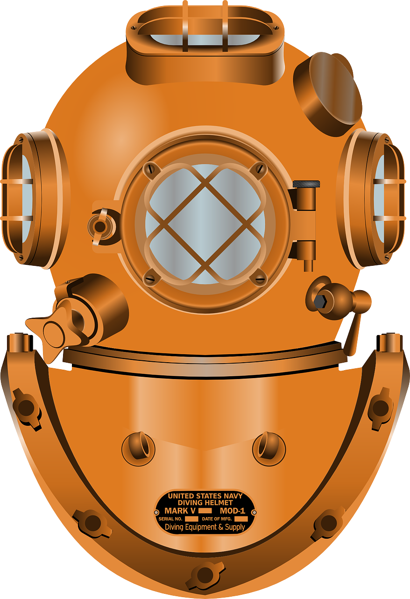

DIVER CHANNEL
.com
교육자료
장비착용
다이빙전 점검
입수
공기 주입 배출
호흡기 기울여 찾기
호흡기 벨브로부터 찾기
웨이트 탈착
BCD 탈착
하강 절차
상승 절차
컴퓨터 잔압 확인
BCD 공기 주입 및 배출
호흡기 물빼기
호흡기 기울여 찾기
호흡기 벨브로부터 찾기
프리플로우 호흡
보조호흡기 사용
보조호흡기 유영
마스크 물빼기
마스크 탈착
마스크 유영
웨이트 탈착
BCD 탈착
핀 피보팅
하버링
조절 수영 상승
지친 다이버 끌기
수중 레스큐
수면 레스큐
기능
가능여부
산소소모량 계산
다이빙스팟
장비일람